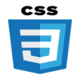

Compétences
Depuis ma premiètres années en école d'informatique j'ai appris plusieurs langages tel que le C, HTLM CSS, Java.
- HTML
- CSS
- Java
- C
- PHP
Logiciels IDE ou expertise

Expériences
-
Alternant Chef de Projets : Alternance Décembre 2020 et Septembre 2021
Corelia, Saint-Denis
-Création de 30 tickets par jour et suivi des incidents via le logiciel KOALY. -Support AS400 signaler les erreurs des machines sur KOALY. -
Projets Scolaires, Juin 2021
ESGI, Paris
- Création d’un site WEB dynamique en HTML-CSS,Javascript, PHP, bases de données. - Refonte d’un site en HTML-CSS pour un projet en développement web.
Etudes
Camille saint-saëns, Deuil la barre, 95, Septembre 2017 - Juin 2020
Baccalauréat : Scientifique
ESGI, Paris, Septembre 2020 - Septembre 2021
Bachelor Informatique
ITIC Paris, Paris, 75, Septembre 2021 - En cours
BTS SIO (Services informatiques aux organisations) Informatique
Loisirs
- Basket
- Voyager
- Manger